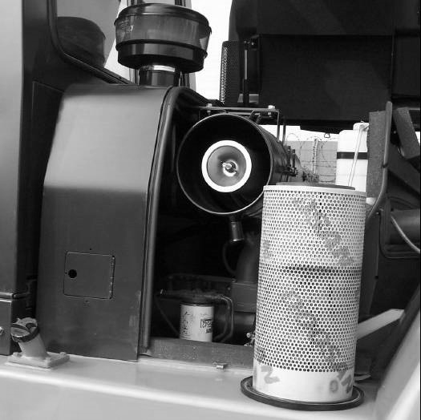

Replace the secondary element after the primary element has been
cleaned three times or yearly.
Remove the primary air cleaner element. See topic “Servicing Filter Element”. Clean
the inside of the air cleaner housing and cover.

Typical Example
Remove the secondary element. Inspect the gasket between the air cleaner housing and
the engine inlet. Replace the gasket if it is damaged.
Notice:
Always replace the secondary element. Do not attempt to reuse it by cleaning.
Install a new secondary element. Install a new or cleaned
primary element. Install the cover. Tighten the latches.
Start the engine and observe the air cleaner service indicator.
If the indicator shows RED after installing a new secondary element
and a cleaned primary (outer) element, replace the cleaned primary
filter with a new element.
Stop the engine. Close the hood and seat assembly.